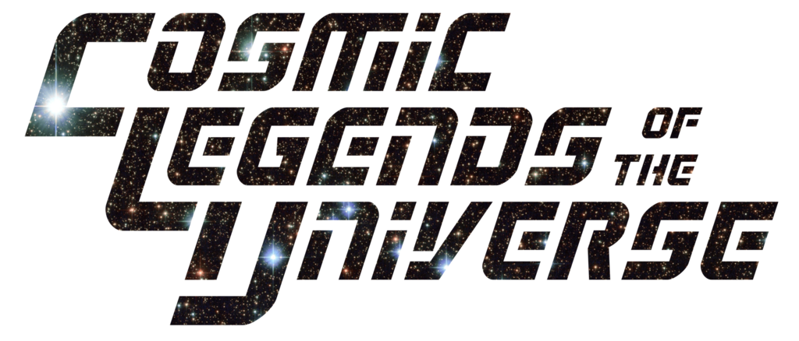
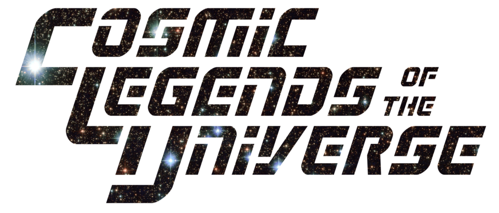

Cosmic Legends of the Universe
Secret Origins of the
- Spindrift
- Games
- Free!
- #0
- SEPT
- NOT APPROVED BY THE COMICS CODE AUTHORITY
- ?
- Who is your Hero?
- What are their Stats?
- Dare you peek inside?!
- The Most Original Hero in History!
2021-Aug-29 07:21 -0700

In the great Hall of Heroes are assembled the world’s greatest superheroes: the Cosmic Legends of the Universe!
is a four-color tabletop roleplaying game where you and your friends take the roles of super-powered heroes who fight against injustice, right that which is wrong, and serve all mankind.
The Harmony Drive system created by Cat McDonald is at the heart of .
To play you’ll need:
This game was created by Cadera Spindrift.
The contents of the game are covered by the Anti-Capitalist Attribution Cooperative License, written by Takuma Okada which you can read here.
This work is based on the Harmony Drive system from Cat McDonald and Peach Garden Games, and licensed for use under the Creative Commons Attribution 3.0 Unported license.
The Driven by Harmony logo is © Cat McDonald, and is used with permission.
Artwork © Jeshields.
To create your hero, you just follow these steps:
Your hero has a list of words called Power Words that define their super-powers and how they use them. Power Words are used in three different ways:
There are four types of Power Words:
When you create your hero, you have two Core Power Words common to all members of your class. You don’t have to choose them; you get them automatically.
In addition to Core Power Words, your hero also has 6 Personal Power Words. When you create your hero, choose these 6 from your class’s list of 15 Personal Power Words. (If your class is Paragon, pick an extra one from your class, and another from any class’s list.)
Your Nova Power Powers can be anything; you’re encouraged to use your Nova Power Words to give your hero a unique ability.
Like Ideals, you can choose any two words you like for your hero’s Nova Power Words.
Nova Power Words might look like this:
When you’ve checked off each of your hero’s Ideals, you unlock your Nova Power Words and can use them until the end of the current Storyline.
Each scene where a Crisis takes places has up to 6 Power Words that describe the environment around your heroes. These are known as Scene Power Words.
The Editor comes up with Scene Power Words when describing a location, and if you think creatively, you can use them in your Power Stunts and Combos.
These Approaches – named for key Golden Age or Silver Age comic titles – were chosen to express how a hero chooses to solve problems, not any innate or immutable characteristics they may have. A hero in a Harmony Drive game can be as physically strong as they like, or as wise or charming as they like.
The other reason for these Approaches is that the concept of Intelligence as a concrete and immutable quality of a person is ableist. It has been used to excuse eugenics and countless other atrocities, including racial and class injustice.
We chose “Detective” as a measure of a hero’s willingness to solve problems by thinking about them and gathering information, not as a measure of their “intelligence” or, heaven forbid, “IQ”.
Each hero’s nature is defined by their scores in 5 different Approaches, which represent their preferred methods to solve problems.
Each of your hero’s Approaches starts with a score of 1, and you have 5 additional points to distribute to them.
Your hero specializes in one style of fighting, whether they attack with their fists or their powers. Those styles are:
If you choose the Knight class, you get to pick an additional fighting style.
Your hero has five Ideals that drive them to feats of heroic courage. These are single words that can be freely chosen by you when you create your hero; there’s no set list.
For example, one hero could have these five Ideals:
When you use all five of your hero’s Ideals in a Storyline, your hero’s Might is refreshed to its starting value, and you unlock your Nova Power Words and can use those until the end of current Storyline.
When a new Storyline begins, all the marked off Ideals are cleared and it’s time to start again.
If you’re stuck for ideas, you can roll roll two dice and check the following table – or just pick up to five from the list that sound good.
| Rolls | Ideal |
|---|---|
| 1, 1 | Honor |
| 1, 2 | Protection |
| 1, 3 | Fun |
| 1, 4 | Helpfulness |
| 1, 5 | Responsibility |
| 1, 6 | Patriotism |
| 2, 1 | Family |
| 2, 2 | Loyalty |
| 2, 3 | Freedom |
| 2, 4 | Wealth |
| 2, 5 | Acceptance |
| 2, 6 | Perfection |
| 3, 1 | Faith |
| 3, 2 | Survival |
| 3, 3 | Compassion |
| 3, 4 | Truth |
| 3, 5 | Science |
| 3, 6 | Restraint |
| 4, 1 | Mercy |
| 4, 2 | Order |
| 4, 3 | Justice |
| 4, 4 | Forgiveness |
| 4, 5 | Love |
| 4, 6 | Competition |
| 5, 1 | Happiness |
| 5, 2 | Courage |
| 5, 3 | Respect |
| 5, 4 | Curiosity |
| 5, 5 | Pride |
| 5, 6 | Beauty |
| 6, 1 | Duty |
| 6, 2 | Guilt |
| 6, 3 | Hope |
| 6, 4 | Revenge |
| 6, 5 | Honesty |
| 6, 6 | Friends |
“Identity” is a general term, and you can define it however you like for your hero. It could include their racial or cultural identity, their sexual or gender identity, their physical appearance, their pronouns, their disabilities (if any), their age, or any-or-all of these.
In addition, you can decide if your hero is a normal human; a human changed through an experiment or magic; a strange visitor from another world; an artificial life form; a time-traveler; or anything else you can imagine.
Most heroes will go by two names – one being their personal, non-superhero name and the other being their superhero code-name.
It’s up to you if everyone knows your hero by both names, or if one is a Secret Identity only shared with a few.
You can also decide if your hero has the same general characteristics in all identities, or if they change from identity to the next: are they taller or shorter in their secret ID? Do they have the same gender in each identity?
Use your imagination, and don’t be afraid to bounce ideas off your fellow players and the Editor if you get stuck.
A Storyline is one or more connected Issues focusing on one hero, known as the Spotlight hero. At a climactic part of the Storyline, the Spotlight hero has an Opportunity to change – the chance to evaluate their assumptions and decisions, and react accordingly.
Once in each Volume, your hero gets to play through one Storyline where they have the Spotlight. You get to define what their Opportunity will be – it could be an important lesson they get to learn, or a piece of information about their origin they’d never known, or an experience you think will force them to make a difficult moral decision.
There are five rules for creating an Opportunity:
Your Hero is the Star - An Opportunity can’t be focused on a group decision or a side character’s experiences, except for how that affects your hero.
You Want to Play Through It - The Editor will plan Crises based on the assumption that if you ask for an Opportunity, it represents something you actually want to have happen to your hero in the game. If you aren’t interested in it, then don’t ask for it!
Change is Never Easy - This means that you should expect that any Opportunity you create represents something that your hero can’t just easily dismiss or shrug off. If you say you want an Opportunity of being asked to join a villain team, then that should represent an actual struggle for your hero.
Change is Not Required - An Opportunity is just that: the chance for a change. But it’s completely valid for your hero to come to that Opportunity and decide they aren’t going to change.
Play to Find Out - Don’t pick the outcome, just the Opportunity! In other words, don’t come up with both the Opportunity and the result of the Storyline; be open to seeing where the questions will take your hero and let yourself be surprised through the act of playing the game.
When you create your hero, choose one Opportunity based on these five rules; you can ask the Editor and your fellow players for advice as well.
At the end of any Storyline where your hero is not the Spotlight hero, you have option of changing your Opportunity – for exmaple, if you come up with a better idea during another her’s Spotlight.
These are examples of the types of Opportunities you can create.
Outside of a fight, your hero has one or more Skills from their civilian life – from their secret identity, their profession before their secret origin, or their advanced heroic training.
The Skills are:
When you create your hero, you can pick two or more skills as determined by your class, which may also give additional skills.
When you make a roll that could be affected by one of your Skills, you add a number of dice to the dice pool equal to the current Volume.
If you don’t have a Skill, you don’t add any extra dice to the pool.
The skills in are listed below, along with 3 to 5 suggestions how you could use the skill with your hero’s Approaches and consequences the Editor can propose on an Edge Success.
You’ve spent many years in education, either as an instructor or just a long-time student – or both! – you can decide.
You are skilled at creating works of art; choose one or more media in which you primarily work.
You’re skilled at evading the law and getting away with it.
Keep in mind that is a four-color game, not a simulation of reality – so Skills follow “comic book logic” rather than working as they really should in real life.
You are a police officer of some kind. If you like, you can be currently deputized by a local or federal agency. All cats are beautiful.
You can build high-tech devices. This is the four-color version of Engineering, not real-world engineering. You can choose one or more optional specialties.
You’re at home in the wilds, and have a good sense of direction.
You’re quite talented with computers and can easily overcome most forms of digital security.
You understand archaeology and are an authority on items and locations of the past. You have one or more fields of study.
You are trained in spotting clues and gathering information. You might work for a law agency or, if you wish, you have a valid private investigator’s license.
You’re skilled at taking the facts and constructing a narrative for publication.
You’re a member of the legal profession and can represent yourself and others in court. Optionally, you can choose specific types of law that you specialize in.
You understand the roots of magical power and can even perform some rituals. As an option, you can specialize in one or more types of magic.
You’re a talented actor, musician, acrobat, magician, or other type of performer. Optionally, you can choose one or more forms of expression.
You are trained as a doctor or other medical professional. You can optionally choose a specialty if you wish.
You know how to operate planes, helicopters, ships, submarines, spaceships, and similar vessels.
You’re practiced at playing the system to influence the public.
You understand science. Not science of the real world, but super-science that can create shrink rays or muscle serums. Optionally, you can choose one or more scientific specialties.
You are a known figure in high society, and know how to make an appearance.
You’re trained in espioniage, and have a number of false identities. Optionally, you have security clearance in a spy agency.
Your hero’s class is a broad archetype that determines their Skills, Core Power Words, Personal Power Words, Class Abilities, and Volume Abilities
Those are summarized in the table below.
Look over the descriptions for each class and choose one that you think sounds fun to play!
| Class | Skills | Core Power Words | PPWs | Class Ability |
|---|---|---|---|---|
| The Divine | Explorer, Historian, Mystic, plus any two | Blessed, Champion | 6 | Give Me Strength! |
| The Dynamo | Science, plus any two | Energy, Overload, plus one more | 6 | Energy Reserve |
| The Inventor | Engineer, Hacker, Scientist, plus any two | Experimental, Prototype | 6 | No Wasted Effort |
| The Knight | Criminal, Investigator, Spy, plus any four | Prepared, Gambit | 5 | Peak Human Potential |
| The Mage | Historian, Mystic, plus any two | Sorcery, Supreme | 6 | The Price of Magic |
| The Monarch | Explorer, Historian, Politician, plus any two | Unexpected, Reserves | 6 | For My Kingdom! |
| The Monstrosity | Criminal, Explorer, plus any two | Strongest, Monster | 6 | Engine of Destruction |
| The Paragon | Any two | Powers, Abilities | 6 + 1 | My One Weakness! |
| The Psychic | Academic, plus any two | Focused, Totality | 6 | Our Minds As One |
| The Shaper | Artist, Scientist, plus any two | Sculpt, Environment, plus one more | 6 | Reshape the Battlefield |
Bright Mother Brigit, guide my hand!
You are imbued with power that originates with one or more deities, or at least powerful extra-planar beings who could be worshipped as gods.
As a Divine hero, you have a wide range of abilities to choose from. Look for ways you can find synergy with other heroes – if they join in a Power Combo that you initiate, your Give Me Strength! bonus applies to the dice they provide, too.
As you create your Divine hero, answer any or all of these questions.
You have the Explorer, Historian, and Mystic skills, plus two additional skills of your choice.
Whenever you make a roll that uses your skill, roll an additional number of dice equal to the Volume.
When you use your Core Power Words or Nova Power Words in a Power Stunt or Power Combo, you can count 6s as two successes instead of 1. When you do, lose either 1 Health or 1 Might after your roll, regardless of how many extra successes you gained.
It’s a staple of superhero comic books that real-life deities are portrayed as either heroes themselves or the sources of power for a hero.
There’s an assumption that these “aren’t real gods who are sacred to anyone any more” – but that’s not necessarily true at all. For example, many modern pagans revere one or more of the Norse gods of myth.
You should be careful when you use mythological deities, especially those from a culture that’s foreign to you. Check with the other players and the Editor, and be prepared to change either your Divine hero or the concept behind them.
You can use your Power Words in the following ways:
When you use a Power Word, it goes on cooldown until the start of the next Hero Phase.
Your Core Power Words are Blessed and Champion. You can spend 1 Might point to add one of these to a Power Stunt or Combo, or 2 Might to add both.
Choose six Personal Power Words from the following list:
When you use a Power Display, you can add one Personal Power Word for free.
You can use two Power Personal Words together to form a Power Stunt or Power Combo by paying 1 Might for each beyond the first.
Choose any two single words you like; these are your Nova Power Words. When you check off all your Ideals, your Nova Power Words are Unlocked until the end of the current Storyline.
You can use one of your Nova Power Words in a Power Stunt or Combo for free; if you spend 1 Might, you can include the second Nova Power Word as well.

Each Volume, you gain a new ability from your class. Your Divine Abilities are gifts from the Gods, whether by birth or by boon.
At the start of Volume 1, choose an ability from this list.
You are tougher than a mere mortal. Increase your maximum Health to 15.
Imbued with power comparable to the titan personification of strength, you can break down most barriers with ease. Add 2 to the dice pool to advance the Smash or Rescue goals.
You have a weapon that is unique in the universe, possibly crafted by a deity of the forge. Decide on the specific weapon, and add that weapon’s proper name as a Core Power Word. In addition, choose either one Energy Power Word from the Dynamo class or one Element Power Word from the Shaper list, and use that as Personal Power Word whenever you have your weapon.
Your insight is unmatched by anyone save the gods themselves. Add 2 to the dice pool to advance the Outwit or Allay goals.
At the start of Volume 2, choose an ability from this list or the Volume 1 list.
Your divine spirit won’t give up, even when the odds are against you. When you are below half your Health, add 1 to the dice pool to advance any Goal.
You can run – or fly, if you have Flight as a Power Word – at speeds approaching Mach 1. The Timely Arrival move costs you 0 points from the Teamwork Pool.
At the start of Volume 3, choose an ability from this list or any previous list.
You’re empowered with divine energy that crackles like electricity when you use Might.
Increase your maximum Might to 15.
Divinely granted knowledge gives you skill in nearly every field. When you make a skill roll, if you don’t have that skill, add 1 to the dice pool.
This playtest document only has Divine abilities up to Volume 3.
Stand back, everyone. This one’s gonna hurt.
You’re a living source of energy. Whether you generate it yourself or tap into another plane of existence, you can use that energy as a blast, an explosion, a punch, and more.
This makes you especially good at blowing things up; in fights, you use up Might quickly, but regain it almost as quickly. Dynamo is one of the few classes that gets a third Core Power Word, so use that to increase your dice pools by spending Might freely.
As you create your Dynamo hero, answer any or all of these questions.
You have the Scientist skill, plus any two skills of your choice.
Whenever you make a roll that uses your skill, roll an additional number of dice equal to the Volume.
You’re overflowing with energy. If you start the Hero Turn with less than 2 Might points, you regain 1 Might.
If you’ve got an idea for another type of energy, go for it! You can run it past the Editor for ideas, but if you say your energy is “thunder”, for example, then your power’s thunder!
You can use your Power Words in the following ways:
When you use a Power Word, it goes on cooldown until the start of the next Hero Phase.
Your Core Power Words are Energy and Overload.
In addition, you get a third Core Power Word – known as your Energy Power Word – chosen from the following list:
You can spend 1 Might point to add one of these to a Power Stunt or Combo, 2 Might to add another, or 3 Might to add all three.
Choose six Personal Power Words from the following list:
When you use a Power Display, you can add one Personal Power Word for free.
You can use two Power Personal Words together to form a Power Stunt or Power Combo by paying 1 Might for each beyond the first.
Choose any two single words you like; these are your Nova Power Words. When you check off all your Ideals, your Nova Power Words are Unlocked until the end of the current Storyline.
You can use one of your Nova Power Words in a Power Stunt or Combo for free; if you spend 1 Might, you can include the second Nova Power Word as well.

Each Volume, you gain a new ability from your class. Your Dynamo Abilities are refinements of your energy powers.
At the start of Volume 1, choose an ability from this list.
Your energy is even more damaging than other sources of the same type. Add 2 to the dice pool to advance the Smash goal.
You’re extremely good at bouncing your blasts off solid targets. When you do, add 2 to the dice pool to advance the Outwit goal.
If a Crisis threatens you or someone else with harm from energy blasts, you can fire off a blast of energy that intercepts and blocks it. You can spend points of Might instead of points from the Teamwork Pool to avoid energy-themed effects.
You can spread your energy in a burst that hits many targets. When you advance the Smash goal by at least 1, advance another goal by 1.
At the start of Volume 2, choose an ability from this list or the Volume 1 list.
Add a Word from the Shaper class’s Personal Power Word list as a Personal Power Word. You can take this ability more than once.
You’ve mastered another form of energy projection in addition to your primary energy type. Add a Word from the Energy Power Word list as a Personal Power Word. You can take this ability more than once.
At the start of Volume 3, choose an ability from this list or any previous list.
You’re able to channel your energy to great effect. When you initiate or join a Power Combo, add 2 to the dice pool.
Your capacity for energy use is extraordinary, even for a hero. Increase your maximum Might to 15.
This playtest document only has Dynamo abilities up to Volume 3.
I’ve been itching to try out these new modifications in the field!
Other heroes may have been born with power, inherited power, or been changed by power – but you built your own power with your own hand(s).
Whether you have a set of standard equipment, wear a powered suit of armor, or create whatever you need on the fly, your creations and Skills are more important than your own powers – if you even have any.
Many Inventors tend toward support roles, and your ability to add to the Teamwork Pool while advancing a goal reflects this.
Don’t be afraid to use your Engineer, Hacker, Scientist, or other skills in conjunction with your Power Words to represent making on-the-fly adjustments to whatever gear you carry.
As you create your Inventor hero, answer any or all of these questions.
You have the Engineer, Hacker, and Scientist skills, plus two additional skills of your choice.
Whenever you make a roll that uses your skill, roll an additional number of dice equal to the Volume.
When you make a roll to advance a Goal, you can choose to add some or all of the roll’s Effectiveness to the Teamwork Pool instead.
You can use your Power Words in the following ways:
When you use a Power Word, it goes on cooldown until the start of the next Hero Phase.
Your Core Power Words are Experimental and Prototype. You can spend 1 Might point to add one of these to a Power Stunt or Combo, or 2 Might to add both.
Choose six Personal Power Words from the following list:
When you use a Power Display, you can add one Personal Power Word for free.
You can use two Power Personal Words together to form a Power Stunt or Power Combo by paying 1 Might for each beyond the first.
Choose any two single words you like; these are your Nova Power Words. When you check off all your Ideals, your Nova Power Words are Unlocked until the end of the current Storyline.
You can use one of your Nova Power Words in a Power Stunt or Combo for free; if you spend 1 Might, you can include the second Nova Power Word as well.

Each Volume, you gain a new ability from your class. Your Inventor Abilities reflect permanent additions to your stock of creations.
At the start of Volume 1, choose an ability from this list.
You’ve invented a suit of armor. Add Armor as a Core Power Word and one Personal Power Word from the Dynamo’s or Paragon’s Personal Power Word list.
Your abilities extend beyond your inventive endeavours, as you possess an actual super-power. Add one Personal Power Word from the Monarch, Monstrosity, or Psychic class lists as a Personal Power Word.
Using your vast vocabulary of super-scientific knowledge, you can easily out-technobabble your opponents. When you roll to advance the Outwit goal, add the largest number of syllables in a Power Word you’re using to the dice pool, with a maximum of 2 + the Volume.
You have a base of operations at the top of a tall building. When you make a skill roll in that building, add 2 to the dice pool.
At the start of Volume 2, choose an ability from this list or the Volume 1 list.
Your education covered a wide range of topics. Gain a number of skills equal to the Volume. Add an additional skill at the start of each later Volume.
You’ve created a number of weapons with a wide variety of effects. At the start of each Storyline, pick a number of Power Words from the Dynamo or Shaper Personal Power Words lists equal to the Volume. You can use each Power Word as a Core Power Word once during the current Storyline without paying any Might.
At the start of Volume 3, choose an ability from this list or any previous list.
Your defenses include an inertia-dampening force field that block harm to you. Instead of losing Health, you can lose an equal amount of Might.
When you use a Power Display, Stunt, or Combo, choose one of the Power Words you’re using. Count all 6s in your roll as 2 successes instead of 1. You then lose the use of that Word after the Display, Stunt, or Combo and don’t regain it until the end of the current Crisis.
This playtest document only has Inventor abilities up to Volume 3.
Hh.
Most other heroes – with the exception of some Inventors – have superhuman powers and abilities. You’re not like them. Your own training and talents are what made you what you are; you may have powers, you may have high-tech devices, but ultimately it comes down to your skill against someone else’s.
When you play your Knight hero, come up with ways to use your Power Words that reflect your normal abilities instead of any superpowers you possess. Other heroes – such as the Dynamo or the Paragon – focus on their powers, but you rely on your Skills, your specialized tools, and your Fighting Styles.
You can combine your Fighting Styles with each other and with your Power Words, so look for synergies there – nearly every Knight has a Weapon Power Word for that reason. If you pick Weapon (or Vehicle), name the general kind of weapon – Rifle, Boomerang, Sword, Shield, and so on.
If you’re going to play a more realistic hero, consider the Weapons Locker ability for access to weapon Power Words, and devote your own Personal Power Words to expanding the variety of effects you can produce.
As you create your Knight hero, answer any or all of these questions.
You have the Criminal, Investigator, and Spy skills, plus four additional skills of your choice.
Whenever you make a roll that uses your skill, roll an additional number of dice equal to the Volume.
You represent the pinnacle of human achievement. If you have any powers, they’re minor in comparison to your extensive training.
This is reflected in both your large number of skills and your combat prowess:
Choose one additional Fighting Style.
You can use your Power Words in the following ways:
When you use a Power Word, it goes on cooldown until the start of the next Hero Phase.
Your Core Power Words are Prepared and Gambit. You can spend 1 Might point to add one of these to a Power Stunt or Combo, or 2 Might to add both.
Choose five Personal Power Words from the following list:
When you use a Power Display, you can add one Personal Power Word for free.
You can use two Power Personal Words together to form a Power Stunt or Power Combo by paying 1 Might for each beyond the first.
Choose any two single words you like; these are your Nova Power Words. When you check off all your Ideals, your Nova Power Words are Unlocked until the end of the current Storyline.
You can use one of your Nova Power Words in a Power Stunt or Combo for free; if you spend 1 Might, you can include the second Nova Power Word as well.

Each Volume, you gain a new ability from your class. Your Knight Abilities are based on continued training and perfection of your physical and mental capabilities.
At the start of Volume 1, choose an ability from this list.
You are a natural leader. Add 2 to the Dice Pool to add to the Teamwork Pool.
Your training focuses on increasing your ability to withstand pain. Increase your maximum Health to 12.
You have specialized weapons, each for a different job. At the start of each Storyline, pick a number of Power Words from the Dynamo or Paragon Personal Power Words lists equal to the Volume. You can use each Power Word as a Core Power Word once during the current Storyline without paying any Might.
You have a huge cache of conventional weapons. From the following list, pick a number equal to the Volume and add those as Personal Power Words: Bullets, Grenade, Handgun, Knife, Non-Lethal, Reload, Rifle, Scope. Add one more at the start of each later Volume.
At the start of Volume 2, choose an ability from this list or the Volume 1 list.
Some people are just reluctant team members. When you roll to create the Teamwork Pool, you can choose to add the roll’s Effectiveness to your maximum and current Might instead of the Teamwork Pool.
Your education covered a wide range of topics. Gain a number of skills equal to the Volume. Add an additional skill at the start of each later Volume.
At the start of Volume 3, choose an ability from this list or any previous list.
Your determination may be your greatest asset. Instead of losing Health, you can lose an equal amount of Might.
Your mastery of combat techniques is unparalleled. Gain a number of fighting styles equal to the Volume. Add an additional fighting style at the start of each later Volume.
This playtest document only has Knight abilities up to Volume 3.
By the Blistering Bonds of Brathoon, be banished!
Mages wield a source of power that can be shaped into nearly anything they can imagine. For a few this power is a gift bestowed upon them, but all Mages spend time studying, perfecting, and controlling their magicks.
As a mage, your hero is likely one of the most powerful around. Not only is it very easy to justify using the Sorcery Core Power Word for nearly anything but your class ability, The Price of Magic, increases the Effectiveness of your rolls if you’re willing to take the consequences of Edge Successes.
And you should be willing to take those, because that’s how the Mage class plays. You’ve got a lot of magical power, but there’s a price to pay for it.
As you create your Mage hero, answer any or all of these questions.
You have the Historian and Mystic skills, plus two additional skills of your choice.
Whenever you make a roll that uses your skill, roll an additional number of dice equal to the Volume.
When you use one of your Core Power Words or Nova Power Words as a third Word in a Power Stunt or Power Test, count 2s as Edge Successes in addition to 1s.
You can use your Power Words in the following ways:
When you use a Power Word, it goes on cooldown until the start of the next Hero Phase.
Your Core Power Words are Sorcery and Supreme. You can spend 1 Might point to add one of these to a Power Stunt or Combo, or 2 Might to add both.
Choose six Personal Power Words from the following list:
When you use a Power Display, you can add one Personal Power Word for free.
You can use two Power Personal Words together to form a Power Stunt or Power Combo by paying 1 Might for each beyond the first.
Choose any two single words you like; these are your Nova Power Words. When you check off all your Ideals, your Nova Power Words are Unlocked until the end of the current Storyline.
You can use one of your Nova Power Words in a Power Stunt or Combo for free; if you spend 1 Might, you can include the second Nova Power Word as well.

Each Volume, you gain a new ability from your class. Your Mage Abilities are new ways of calling upon arcane power.
At the start of Volume 1, choose an ability from this list.
Everyone enjoys euphonious enunciation! When you roll a Power Stunt or Power Combo to add to the Teamwork Pool, add 1 die to the dice pool for each Word whose first letter matches the first letter of another Word in the Stunt or Combo.
Your magicks can cloud the minds of mortals. Add 2 dice when you use a power to advance the Outwit or Rescue goals.
You have a base of operations hidden in a normal-looking building or tower. When you make a skill roll in that building, add 2 to the dice pool.
Add Portal as a Personal Power Word. You can make the General Alert move without spending from the Teamwork Pool.
At the start of Volume 2, choose an ability from this list or the Volume 1 list.
At the start of each Storyline, pick a number of Power Words from the Psychic or Shaper Personal Power Words lists equal to the Volume. You can use each Power Word as a Core Power Word once during the current Storyline without paying any Might.
Your power continues to grow, but at what cost? Increase your maximum Might to 15.
At the start of Volume 3, choose an ability from this list or any previous list.
You can impart some of your magical power to another hero. Choose two of your Power Words. Until the end of the current Storyline, they gain those Words as Personal Power Words. You can only do this once per Storyline.
You can use your magic to heal your allies. As an action, roll a Power Display, Stunt, or Combo. One or more heroes of your choice regain a total amount of Health equal to the Effectiveness of your roll plus the Volume.
This playtest document only has Mage abilities up to Volume 3.
I shall forgive you but once for your disrespect.
You are a leader in a city, nation, or people who exist outside of mainstream international society.
Your ways may seem unorthodox and even arrogant to those unfamiliar with your culture, but their ignorance can be excused … mostly.
Although you fight for justice and freedom for all, you feel a special obligation to protect your home – even if you don’t currently live there.
Your Monarch hero is most strongly defined by their home than by their Powers, Approaches, or Skills. You’re most effective against threats against that home.
It’s up to you to decide if any given Crisis endangers your domain, so you may want to ask the Editor or other players during the Countdown to Crisis about ideas to tie your home to the current situation.
As you create your Monarch hero, answer any or all of these questions.
You can define any details you like about your Monarch’s home. That doesn’t mean that you shouldn’t be aware of real-world stereotypes, bigotries, and privilege.
Your Monarch’s home is never somewhere that exists – or could exists – in the real world. You can live on the Moon, or in the Antarctic, or under the Pacific Ocean, or in an adjacent dimension, or on a floating city – but you can’t be the Monarch of China or Uganda or Pittsburgh.
Check in regularly with your fellow players and the Editor to make sure that you’re not straying into problematic stereotypes, including accents, as you play your Monarch.
You have the Explorer, Historian, and Politician skills, plus two additional skills of your choice.
Whenever you make a roll that uses your skill, roll an additional number of dice equal to the Volume.
You feel a special attachment to your homeland, whether it be a physical location or a metaphorical concept such as “the Seas”.
If you declare that a Crisis threatens your domain, add 3 to the Teamwork Pool when you form it, and add 1 additional point to the Pool when you add to it during the Crisis.
You can use your Power Words in the following ways:
When you use a Power Word, it goes on cooldown until the start of the next Hero Phase.
Your Core Power Words are Unexpected and Reserves. You can spend 1 Might point to add one of these to a Power Stunt or Combo, or 2 Might to add both.
Choose six Personal Power Words from the following list:
When you use a Power Display, you can add one Personal Power Word for free.
You can use two Power Personal Words together to form a Power Stunt or Power Combo by paying 1 Might for each beyond the first.
Choose any two single words you like; these are your Nova Power Words. When you check off all your Ideals, your Nova Power Words are Unlocked until the end of the current Storyline.
You can use one of your Nova Power Words in a Power Stunt or Combo for free; if you spend 1 Might, you can include the second Nova Power Word as well.

Each Volume, you gain a new ability from your class. Your Monarch Abilities represent esoteric knowledge that is inaccessible to those outside of your home.
At the start of Volume 1, choose an ability from this list.
The weapons from your home use a technology that defies conventional explanation. At the start of each Storyline, pick a number of Power Words from the Dynamo or Mage Personal Power Words lists equal to the Volume. You can use each Power Word as a Core Power Word once during the current Storyline without paying any Might.
You feel an obligation to protect the ordinary people of the world. Add 2 to the dice pool to advance the Rescue goal. If the bystanders are your subjects, also add the Volume to the dice pool.
You have a hidden base of operations somewhere in your distant monarchy. When you make a skill roll in that base, add 2 to the dice pool.
If you are below half Health, add 2 to the dice pool to advance the Smash goal.
At the start of Volume 2, choose an ability from this list or the Volume 1 list.
Your favor is freely bestowed as a boon to those in need. Add 2 to the dice pool when you advance the Allay goal. If the source of the Crisis is one of your subjects, also add the Volume to the dice pool.
You have trained in a number of fighting techniques unknown to the outside world. Gain a number of fighting styles equal to the Volume. Add an additional fighting style at the start of each later Volume.
At the start of Volume 3, choose an ability from this list or any previous list.
Others follow your directions based on your force of personality, tactical acumen, or keen insight. Whenever another hero adds to the Teamwork pool, your leadership gives them a number of bonus dice equal to the Volume.
Whenever you are in your home, you can draw upon your connection to the land. Add Land and Soul as Personal Power Words; when you use one of them in a Power Stunt or Power Combo while in your home, it doesn’t cost any Might. (Adding both costs 1 Might.)
At the start of Volume 4, choose an ability from this list or any previous list.
As long as your home is imperiled, you can’t be killed. If you’re reduced to 0 Health or 0 Might while defending your home, regain 1 point of each at the start of the next Hero Phase.
No slight goes unpunished. If someone has harmed you or your home, add 1 to the Effectiveness whenever you advance the Smash goal against them.
At the start of Volume 5, choose an ability from this list or any previous list.
You can make someone an honorary member of your home – which also bestows a boon upon them, possibly even a supernatural one. Choose two of your Power Words. Until the end of the current Storyline, they gain those Words as Personal Power Words. You can only do this once per Storyline, although you can reaffirm someone’s status in a later Storyline, if you wish.
You can call upon the energy of your home – mystical, inspirational, or physical – to end a threat. As a move, you can spend 1 Might to fully Advance one goal of a Crisis that threatens your home. You can do this only once for each Crisis.
So here’s how this is gonna go. I’m gonna punch ya, you’re gonna get real hurt, then give up. Capeesh?
A monster.
That’s what they say you are.
Because of your strength, your size, your appearance.
You’re more than that – you always have been – but most people won’t look beyond the obvious and see you as you truly are.
Well, then. If they want a monster that badly, maybe you should be the monster they say you are?
Your hero is really, really good at breaking things. You’re going to want to advance the Smash goal whenever you can, but keep in mind that you’re more than just muscle. You have Skills, Abilities, and possibly other Power Words that you can use switch up your moves from Hero Phase to Hero Phase.
As you create your Monstrosity hero, answer any or all of these questions.
You have the Criminal and Explorer skills, plus two additional skills of your choice.
Whenever you make a roll that uses your skill, roll an additional number of dice equal to the Volume.
When you use your Core or Nova Power Words in a Power Stunt or Combo to advance the Smash goal, add 2 to the Effectiveness.
You can use your Power Words in the following ways:
When you use a Power Word, it goes on cooldown until the start of the next Hero Phase.
Your Core Power Words are Strongest and Monster. You can spend 1 Might point to add one of these to a Power Stunt or Combo, or 2 Might to add both.
Choose six Personal Power Words from the following list:
When you use a Power Display, you can add one Personal Power Word for free.
You can use two Power Personal Words together to form a Power Stunt or Power Combo by paying 1 Might for each beyond the first.
Choose any two single words you like; these are your Nova Power Words. When you check off all your Ideals, your Nova Power Words are Unlocked until the end of the current Storyline.
You can use one of your Nova Power Words in a Power Stunt or Combo for free; if you spend 1 Might, you can include the second Nova Power Word as well.

Each Volume, you gain a new ability from your class. Your Monstrosity Abilities show your increasing distance from humanity.
At the start of Volume 1, choose an ability from this list.
You are amazingly hard to hurt. Increase your maximum Health to 15.
Your injuries heal quickly. Regain 1 Health at the start of the Hero Phase if you are at or above half of your maximum Health.
Even at your worst, you wouldn’t harm an innocent. Add 2 to the dice pool when you advance the Allay or Rescue goals.
You get knocked down but you get up again. They’re never gonna keep you down. Regain 1 Health at the start of the Hero Phase if you have 0 Health.
At the start of Volume 2, choose an ability from this list or the Volume 1 list.
If you’re ever wounded, you don’t stay that way for long. Regain 1 Health at the start of the Hero Phase if you are at less than half of your maximum Health but have at least 1 Health.
You are a storehouse of untapped energy. Increase your maximum Might to 15.
At the start of Volume 3, choose an ability from this list or any previous list.
There are few things that can seriously harm you. Increase your maximum Health to 20.
You can call upon your life-force to fuel your powers. You can spend Health whenever you would normally spend Might.
At the start of Volume 4, choose an ability from this list or any previous list.
Your capacity for destruction is extraordinary, even for a hero. Increase your maximum Might to 15.
You might be seriously wounded, but you never stay dead. If you’re reduced to 0 Health or 0 Might, regain 1 point of each at the start of the next Hero Phase.
This playtest document only has Monstrosity abilities up to Volume 4.
I’m sorry, but I can’t let you do that.
You’re convinced that your powers are meant to help others, not for your own benefit. You protect those who can’t defend themselves, help those who can’t help themselves.
You’re the epitome of a hero. Flight, strength, invulnerability, and superhuman verions of normal human abilities are common among Paragons, along with the odd random power usually found in another class.
If you’re playing a Paragon because you want to revel in your hero’s power … then you’re probably playing the wrong class.
Paragons, despite often being the most powerful heroes in concept, are primarily support heroes. The class ability – My One Weakness! – takes your hero out of the fight but gives a boost to the other heroes!
Your Paragon may have more Health than other heroes – but that’s because, ideally, you’re using Take the Hit whenever you possibly can. Paragons are about protecting others first, and punching villains a distant second.
Also, look for creative ways to use your Powers and Abilities Core Power Words – they can justify any number of ad hoc power uses in combination with your other Power Words, such as Vision Powers or Alien Abilities. What do those mean? Whatever you say they mean!
As you create your Paragon hero, answer any or all of these questions.
You have two skills of your choice.
Whenever you make a roll that uses your skill, roll an additional number of dice equal to the Volume.
When you create your hero, pick a weakness they possess – usually some kind of substance, energy type, or other physical phenomenon.
During a Crisis, you can declare at any point that your one weakness is present.
If you do, you temporarily lose access to all of your Power Words, your Might becomes 0, and you skip your turn during the Hero Turn. This lasts until someone else removes the source of your weakness from the scene, or until the end of the present Crisis.
Every Hero Turn that you’re inactive, the other heroes get extra dice on their rolls equal to the Volume number.
When the source of your weakness is disposed of, you regain access to all your Power Words and your Might is refreshed to its normal maximum value.
You can use your Power Words in the following ways:
When you use a Power Word, it goes on cooldown until the start of the next Hero Phase.
Your Core Power Words are Powers and Abilities. You can spend 1 Might point to add one of these to a Power Stunt or Combo, or 2 Might to add both.
Choose six Personal Power Words from the following list:
In addition, choose one Power Word from any other class’s Personal Power Words list.
When you use a Power Display, you can add one Personal Power Word for free.
You can use two Power Personal Words together to form a Power Stunt or Power Combo by paying 1 Might for each beyond the first.
Choose any two single words you like; these are your Nova Power Words. When you check off all your Ideals, your Nova Power Words are Unlocked until the end of the current Storyline.
You can use one of your Nova Power Words in a Power Stunt or Combo for free; if you spend 1 Might, you can include the second Nova Power Word as well.

Each Volume, you gain a new ability from your class. Your Paragon Abilities reflect new uses for your vast array of super-powers.
At the start of Volume 1, choose an ability from this list.
You are amazingly hard to hurt. Increase your maximum Health to 15.
You protect others from harm with your own body. When you use the Take the Blow move, you lose a maximum of 1 Health.
You are looked up to by the common people. Add 2 to the dice pool when you advance the Rescue goal.
Unlike most heroes, your powers can be used frequently. The first time you make a Power Display, Stunt, or Combo move in a Hero Phase, choose one Power Word used. That Word doesn’t go on cooldown.
At the start of Volume 2, choose an ability from this list or the Volume 1 list.
Your capacity for heroic deeds is extraordinary, even for a hero. Increase your maximum Might to 15.
You refuse to stay down if there are innocents in danger. When you are at 0 Health or 0 Might, regain 1 point of each at the start of the next Hero Phase if the Rescue goal can still be advanced.
At the start of Volume 3, choose an ability from this list or any previous list.
You have a base of operations in a remote location. When you make a skill roll in that building, add 2 to the dice pool.
There are few things that can seriously harm you. Increase your maximum Health to 20.
This playtest document only has Paragon abilities up to Volume 3.
I know secrets about you that you don’t even know yourself.
Psychics are masters of mind powers, able to communicate with others and link minds together.
Their powers are often purely mental without a physical manifestation; a duel between two Psychics could take place in the middle of a crowded restaurant with no one any the wiser.
If normal people knew that a Psychic was among them – and could potentially access their innermost thoughts and desires! – they would react with fear and hostility. Some Psychics will pose as some other type of hero to avoid such prejudices … even as they admit such biases might not be entirely unwarranted.
Your Psychic hero is likely the lynchpin of the team, although not necessarily the leader. This is a passive ability, though – unless you choose otherwise, everyone’s connected when you’re present – so look for ways to use your Power Words, Skills, and Abilities.
Many comic books and roleplaying games will gloss over it, but I’ll state it directly: nearly any use of mind control powers represents gross violations of another person’s autonomy and consent.
This doesn’t mean you can’t ever do that in an Issue of , but it means that you have to be careful and safe by checking in with the other players and the Editor – because your Psychic hero is probably doing something that’s quite horrific if you’re using mind control.
During Issue 0 or the start of an Issue, you should ask the other players and the Editor about whether they view reading someone’s mind without consent as the same kind of violation. Are surface thoughts fine, but deep memories not? You need to have these kinds of talks, as a group, before it comes up in play.
As you create your Psychic hero, answer any or all of these questions.
You have the Academic skill, plus two additional skills of your choice.
Whenever you make a roll that uses your skill, roll an additional number of dice equal to the Volume.
As long as you are conscious, you and the other heroes can communicate with each other telepathically.
If everyone in a Power Combo is part of your Mind Link, the hero making the roll adds 2 extra dice to the roll.
You can use your Power Words in the following ways:
When you use a Power Word, it goes on cooldown until the start of the next Hero Phase.
Your Core Power Words are Focused and Totality. You can spend 1 Might point to add one of these to a Power Stunt or Combo, or 2 Might to add both.
Choose six Personal Power Words from the following list:
When you use a Power Display, you can add one Personal Power Word for free.
You can use two Power Personal Words together to form a Power Stunt or Power Combo by paying 1 Might for each beyond the first.
Choose any two single words you like; these are your Nova Power Words. When you check off all your Ideals, your Nova Power Words are Unlocked until the end of the current Storyline.
You can use one of your Nova Power Words in a Power Stunt or Combo for free; if you spend 1 Might, you can include the second Nova Power Word as well.

Each Volume, you gain a new ability from your class. Your Psychic Abilities are new ways to channel your psionic power.
At the start of Volume 1, choose an ability from this list.
With your mastery of mental illusion, you’re able to fool nearly anyone. Add 2 to the dice pool when you use a Power to advance the Outwit goal.
You can use your empathic powers to read emotions and calm a crowd. Add 2 to the dice pool when you use a Power to advance the Allay goal.
You can form a weapon out of pure psionic energy. Add Weapon as a Personal Power Word and pick a Fighting Style that complements that weapon.
Your mental power has a physical manifestation, letting you move objects with ease. Add an Elemental Power Word and a Personal Power Word from the Shaper’s lists as Personal Power Words.
At the start of Volume 2, choose an ability from this list or the Volume 1 list.
You can keep yourself conscious through sheer force of will. Instead of losing Health, you can lose an equal amount of Might.
As a move, you can use your mental powers to heal someone else. They regain Health equal to the Effectiveness of a Power roll.
At the start of Volume 3, choose an ability from this list or any previous list.
Your capacity for psionics is extraordinary, even for a hero. Increase your maximum Might to 15.
Your mind link allows skills to be shared. Someone in your link is considered to have a skill if anyone in your link has that skill.
This playtest document only has Psychic abilities up to Volume 3.
Everyone wave goodbye to him! Get it? Wave. Because I control waves. Nobody? Tough crowd.
A Shaper is able to control some physical – or quasi-physical – substance, such as rock, water, or shadows. Their powers have a greater effect on the world around them than most heroes’ do, such as controlling the weather or leveling buildings with a glance.
Your Shaper hero focuses on two things: the type of matter you can control, and the environment around you.
Each scene has several Scene Power Words that are chosen by the Editor during the Countdown to Crisis. However, an Editor might not think of everything – so it’s fine for you to suggest that perhaps there might be a magazine stand on the street corner, for example, if your hero controls paper.
One of the first things you’re going to want to do is use your Reshape the Battlefield ability to give yourself and the other heroes Scene Power Words to use. Remember that a Scene Power Word costs 0 Might to use! Reshaping at the start of a Crisis can save you a lot of Might in the long run!
If you can think of something else you’d like your Shaper hero to control, then choose that as your Element Power Word instead! If you decide that your hero controls dairy products, then go for it! If you need advice on a good Word to pick, you can always ask the Editor and other players for ideas.
As you create your Shaper hero, answer any or all of these questions.
You have the Artist and Scientist skills, plus two additional skills of your choice.
Whenever you make a roll that uses your skill, roll an additional number of dice equal to the Volume.
As your move during the Hero Phase of a Crisis, you can change your environment.
Choose your Power Words, spend Might as normal, and make a roll.
If the Effectiveness of your roll is at least 1, you can change one of the Scene Power Words to one of your own Power Words until the end of the Crisis.
The maximum number of Scene Power Words you can change during a Crisis is equal to the Volume number.
You can use your Power Words in the following ways:
When you use a Power Word, it goes on cooldown until the start of the next Hero Phase.
Your Core Power Words are Sculpt and Environment.
In addition, you get a third Core Power Word – known as your Element Power Word – chosen from the following list:
You can spend 1 Might point to add one of these to a Power Stunt or Combo, 2 Might to add another, or 3 Might to add all three.
Choose six Personal Power Words from the following list:
When you use a Power Display, you can add one Personal Power Word for free.
You can use two Power Personal Words together to form a Power Stunt or Power Combo by paying 1 Might for each beyond the first.
Choose any two single words you like; these are your Nova Power Words. When you check off all your Ideals, your Nova Power Words are Unlocked until the end of the current Storyline.
You can use one of your Nova Power Words in a Power Stunt or Combo for free; if you spend 1 Might, you can include the second Nova Power Word as well.

Each Volume, you gain a new ability from your class. Your Shaper Abilities show a widening diversity in the applications of your control power.
At the start of Volume 1, choose an ability from this list.
In addition to your ability to control physical elements, you can also create it as well. Add one Word from the Dynamo’s Energy Power Word list as a Personal Power Word.
You can surround yourself with a clear bubble of force. Instead of losing Health, you can lose an equal amount of Might.
Your power over substances makes you exceptionally skilled at protecting bystanders from harm. Add 2 to the dice pool when you use a Power to advance the Rescue goal.
You can construct a defensive wall to protect yourself and your teammates. When a Crisis Move affects all of the heroes, you can spend Might to counter it instead of spending from the Teamwork Pool.
At the start of Volume 2, choose an ability from this list or the Volume 1 list.
You’ve discovered that your powers aren’t limited to a single substance but can be extended to other types of shaping. Add number of Words from the Element Power Word list as Personal Power Words equal to the Volume. Add another at the start of each later Volume.
Your capacity for matter control is extraordinary, even for a hero. Increase your maximum Might to 15.
At the start of Volume 3, choose an ability from this list or any previous list.
When one of your Power Words matches one of the Scene Power Words – or has approximately the same meaning – regain 1 Might at the start of the Hero Phase whenever you are below half of your maximum Might.
Your powers also give you a measure of control over minds. Add one Word from the Psychic’s Personal Power Word list as a Personal Power Word.
This playtest document only has Shaper abilities up to Volume 3.
Hero Sheet


Hero Name Class A.K.A. Volume Pronouns
Power Words Core Personal Nova Unlocked
Skills Fighting Styles
Health Max Might Max
Action Adventure Suspense Detective Mystery
Ideal Ideal Ideal Ideal Ideal
Abilities Class Volume 1 Volume 2 Volume 3 Volume 4 Volume 5
Storyline Looks Completed
Retcon Continued Next Page Meanwhile, … Later That Day, …
Driven by Harmony logo © Cat McDonald, used with permission.